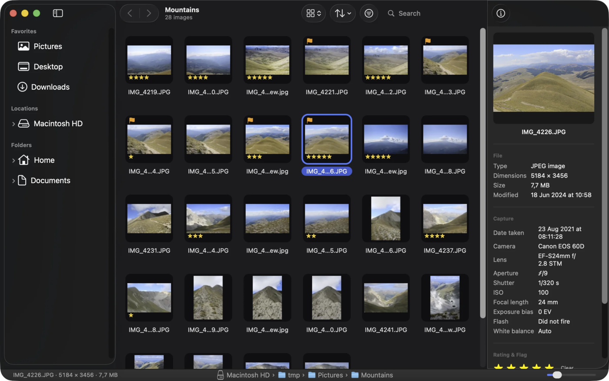
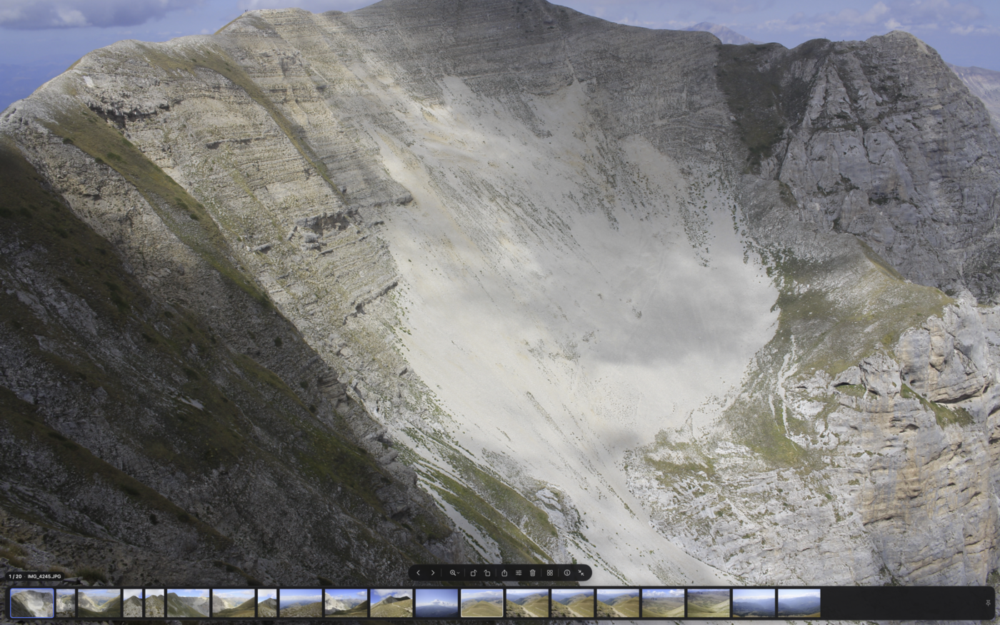
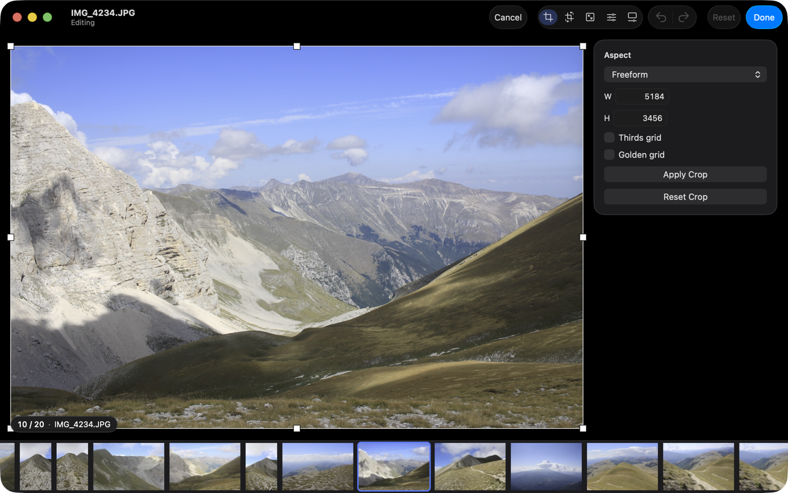
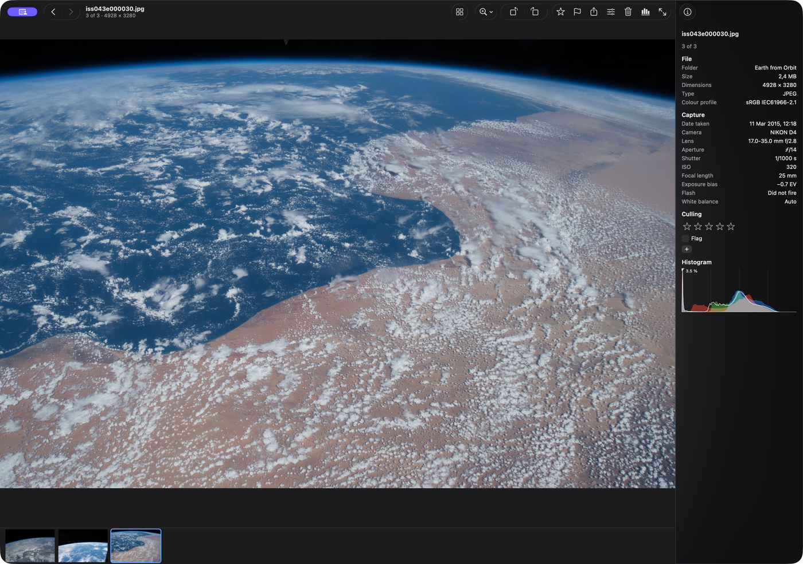
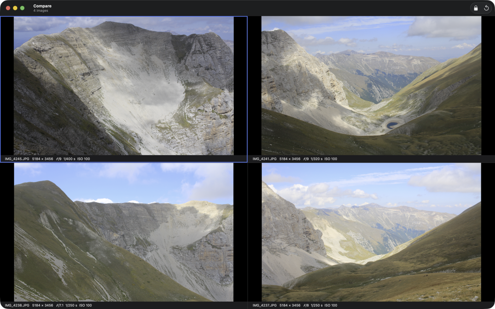
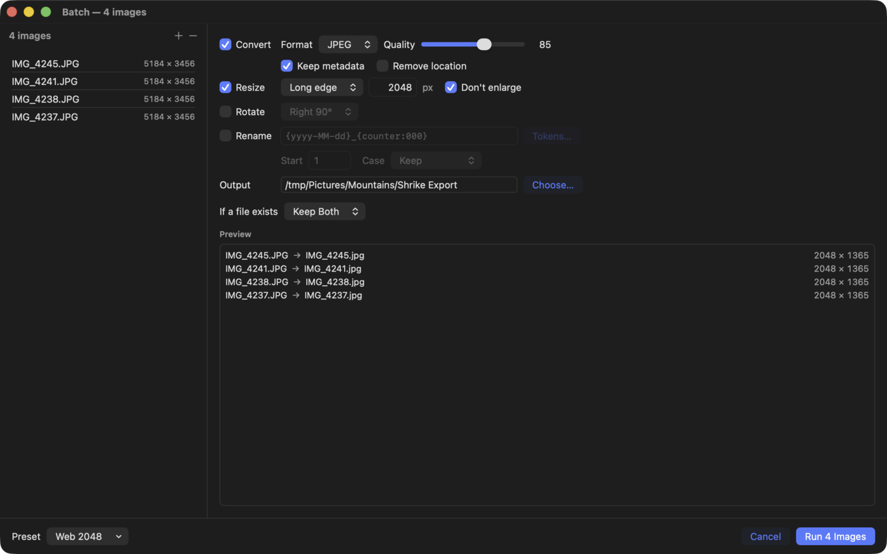
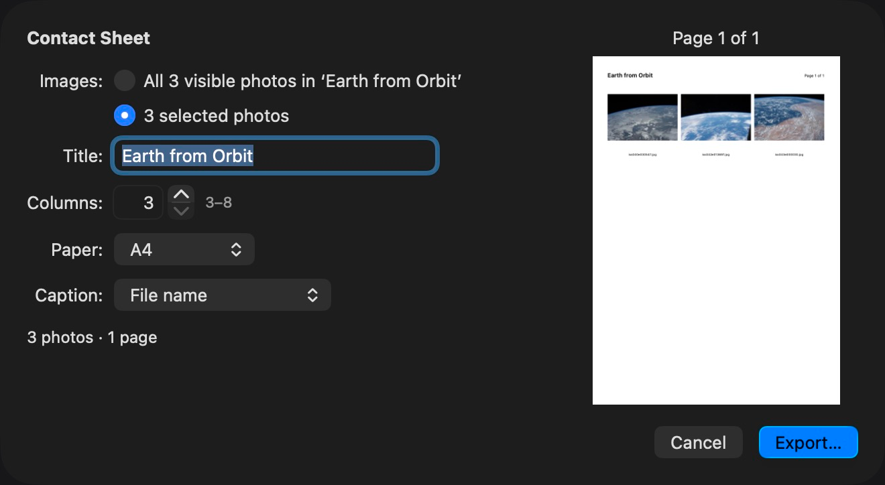

A fast, free image viewer for Mac
Press Space and the next photo is already there. Browse a folder, rate and compare your shots, make light edits.
Free and open source (MIT) · macOS 14 or newer · Apple silicon and Intel · about 5 MB
Not sure it is safe? See how to install. If the download does not start, open the download page.
New in 0.2.9 Zoom to Fit works after a zoom-out, the Undo button on the Trash message is easier to hit, one design for both info panels, plain keys shown as badges in menus, and many small fixes. See what changed

Why Shrike
Fast where it counts
Shrike prepares the next photos in the background, so moving through a folder feels instant. About 33 ms from key press to photo.
Private by design
Shrike never connects to the internet. Your photos are read from your disk and stay there. No accounts, no tracking.
Open source
Anyone can read the code and check what it does. It is free under the MIT license, today and later.
No ads. No upsell. No sign-up.
What you get
Everything you need to go through your photos, and nothing you do not. Features with a + open to show a picture.
Browse a whole folderGrid, filmstrip or list. Shrike remembers your choice.
Folder list on the left, then a grid, a filmstrip with a big preview, or a list. Names sort naturally, so IMG_2 comes before IMG_10. Thumbnails are saved, so a folder you have seen opens at once.


Calm full screenThe bars hide by themselves. Move to an edge and they return.
The photo fills the screen. Move the pointer to the bottom edge and a small bar of buttons and a strip of thumbnails appear. Move away and they hide again. The info panel stays closed until you ask for it.


Light editsCrop, rotate, resize, colour and levels. Revert any time.
Crop, rotate (also by any angle), resize, colour adjustments and levels. Shrike keeps a copy of the original, and File > Revert to Original takes you back.


Histogram and infoEXIF, a histogram and the share of clipped pixels.
The info panel shows EXIF and a histogram, over the photo in full screen. The histogram says how much of the photo is clipped at each end. Open the photo’s place in Apple Maps when it has GPS.


Compare up to 4Photos side by side. Zoom and pan stay in sync.
Select two to four photos and press Cmd+4. They open side by side with their file name, size and camera settings. Lock the view and zoom or pan in one, and the others follow.


BatchConvert, resize or rename many photos at once.
Choose the photos, then Image > Batch. Pick a format, a size, a rotation or a new name pattern. A preview lists every file before you start. Your originals are not changed, because the new files go to another folder.


Print and contact sheetPrint a photo, or make a contact sheet (A4 or US Letter).
File > Export Contact Sheet makes a PDF with small pictures of a whole folder or of the photos you selected. Choose a title, the number of columns, the paper and a caption under each picture. File > Print prints one photo.


Formats: JPEG, PNG, HEIC, WebP, AVIF, GIF, TIFF, BMP, Photoshop (PSD) and RAW from most cameras (RAW support comes from macOS).
Handy keys: Space and the arrow keys move, Z (hold) is a loupe, A is 100 %, B fits the window, Ctrl+Cmd+F is full screen, Ctrl+H is the histogram, Cmd+4 compares, F5 starts a slideshow. All shortcuts are in the app: Help > Keyboard Shortcuts (Cmd+/). Coming from Windows? Settings has a FastStone-style preset.
Speed, in numbers
Shrike decodes the next photos before you ask for them.
Median key press to photo on screen, windowed and full screen, with the photo already prepared. A photo that is not prepared yet (for example jumping to the end of a big folder) takes about 0.1 s.
12-megapixel JPEGs on 4 cores. Thumbnails are saved, so a folder you have seen opens at once the next time.
Apple silicon and Intel in one app. The download is about 5 MB.
Numbers from Shrike’s own measurements, taken on one Mac (M2 Pro) in October 2026. Your Mac may be faster or slower.
How to install
It takes about a minute. The first time you open Shrike, macOS asks you to confirm once.
-
Download. Click Download for Mac. The file is about 5 MB.
Download for Mac - Open the file. Double-click
Shrike.dmgin your Downloads folder. Drag Shrike onto the Applications folder. - Open Shrike from Applications, not from the DMG. If macOS says it cannot check the app, see the box below.
- Allow folder access. When you open photos from Desktop, Documents, Downloads or an external drive, macOS asks once if Shrike may read them. Click Allow.
macOS may not open it the first time
This is normal. Shrike is a free hobby project and is not notarized by Apple, because notarization needs a paid Apple Developer account. Apple has not checked the app, so macOS asks you to confirm once. After that it opens normally. Not sure which macOS you have? Choose Apple menu > About This Mac.
macOS 26 Tahoe
- Open Shrike from Applications.
- macOS asks for your Mac’s password to allow it. Enter it.
- If you see “Shrike Not Opened” instead, follow the macOS 15 steps.
macOS 15 Sequoia
- Open Shrike from Applications. Click Done in the message.
- Open System Settings > Privacy & Security and scroll down.
- Click Open Anyway next to Shrike. Enter your password. Click Open Anyway again.
macOS 14 Sonoma
- In Applications, right-click (or Control-click) Shrike and choose Open.
- Click Open in the message.
If macOS says “Shrike is damaged and can’t be opened”
The download is probably broken. Delete it and download it again. For advanced users: this Terminal command skips the first-launch step.
xattr -dr com.apple.quarantine /Applications/Shrike.app
Want to check the file first? Every release is built on GitHub from the public code. See the releases page and the build page. Prefer to build it yourself? The source is on GitHub, with build steps in the README.
What Shrike connects to
Shrike talks to
- Nothing on the internet. Shrike never connects to it.
- Apple Maps, only when you choose Show in Maps for a photo that has a GPS position.
- The editor you chose, only when you choose Open in External Editor.
- Your own network drive, if your photos are on one. macOS may ask for permission to use the local network for this.
Shrike does not
- Send your photos or anything about them to us. We have no servers.
- Track you. There is no telemetry, no analytics and no crash reporting.
- Check for updates by itself. To get a new version, download it from the releases page.
- Show ads, or ask for an account.
Shrike keeps its thumbnails, ratings and edit backups in your Library folder, on your Mac only. When you rate or flag a photo, Shrike also writes that rating or flag as a small hidden note on the file (a macOS extended attribute), so it survives if you move the file in Finder. You can turn this off in Settings. Shrike changes the content of a photo only when you save an edit. Read the code.
This website has no cookies, no trackers and loads nothing from other sites.
Questions
Is it really free?
Yes. There are no paid plans and no ads. It is open source under the MIT license.
Does it work on Windows, Linux or iPhone?
No. Shrike is a Mac app. It needs macOS 14 Sonoma or newer and runs on Apple silicon and Intel Macs.
Is it safe? Why does macOS warn me?
Shrike is not notarized by Apple, so macOS is careful the first time. The code is public and anyone can check it. See How to install.
Does Shrike change my photos?
Only when you save an edit, and then Shrike keeps a copy of the original. Ratings and flags are written as a small hidden note on the file, not into the picture. You can turn that off in Settings.
How do I get a new version?
Shrike does not check for updates, because it never goes online. Download the new version from the releases page.
Which photo formats does it open?
JPEG, PNG, HEIC, WebP, AVIF, GIF, TIFF, BMP, Photoshop (PSD) and RAW from most cameras. RAW support comes from macOS.
I found a bug or I want a feature. What do I do?
Open an issue on GitHub. Please do not include private photos.